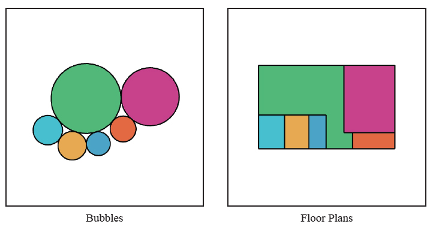
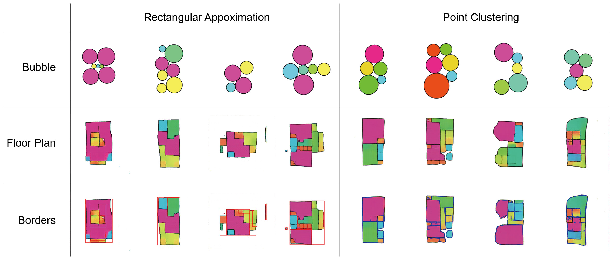
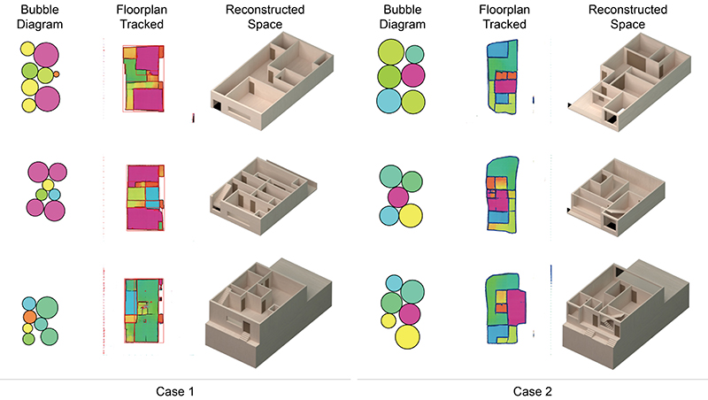

BUBBLE2FLOOR: A pedagogical experience with deep learning for floor plan generation
This paper reports a pedagogical experience that incorporates deep learning to design in the context of a recently created course at the Carnegie Mellon University School of Architecture. It analyses an exercise called Bubble2Floor (B2F), where students design floor plans for a multi-story row-house complex. The pipeline for B2F includes a parametric workflow to synthesise an image dataset with pairs of apartment floor plans and corresponding bubble diagrams, a modified Pix2Pix model that maps bubble diagrams to floor plan diagrams, and a computer vision workflow to translate images to the geometric model. In this pedagogical research, we provide a series of observations on challenges faced by students and how they customised different elements of B2F, to address their personal preferences and problem constraints of the housing complex as well as the obstacles from the computational workflow. Based on these observations, we conclude by emphasising the importance of training architects to be active agents in the creation of deep learning workflows and make them accessible for socially relevant and constrained design problems, such as housing..

A Sample of Data Points Including Paired Diagrams, 2021

Post processing of Floor Plan Diagrams in Bubble2Floor, 2021

Students' Design Example of Housing Unit Using Bubble2Floor, 2021